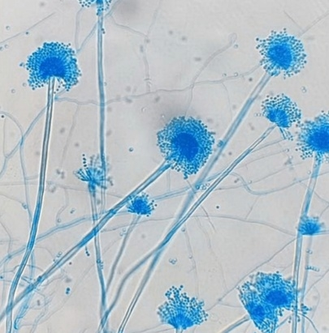
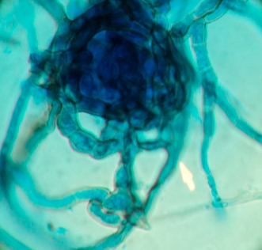
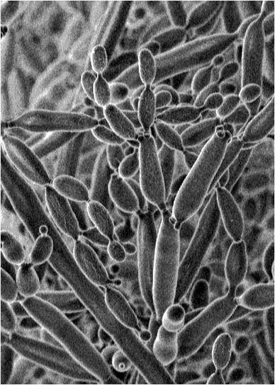

Chapter 9
üçÑ Mycology - Study of Fungal Structures
Microscopic examination of fungal spores, cells, and reproductive structures
Slide 1

Conidium
Characteristics:
Develops by budding from parent cell
Small, oval or round bud-like structures
Attached by narrow neck before separation
May appear singly or in chains (pseudohyphae)
Typical of yeasts and yeast-like fungi
üçÑ Found in:
- Candida species
- Saccharomyces species
- Various yeasts
- Clinical specimens
⚙️ Functions:
- Rapid spread in suitable environments
- Formation of new colonies
- Important in diagnosing yeast infections
- Industrial use in baking, brewing, and biotechnology
Slide 2
Yeast Cell
Characteristics:
Unicellular form of fungi
Small, oval or spherical (3-10 µm)
Smooth cell wall
Sometimes seen with bud attached
Colonies look moist, creamy, or pasty
üçÑ Found in:
- Saccharomyces cerevisiae (baker's yeast)
- Candida species
- Various environmental sources
- Food and beverage fermentation
⚙️ Functions:
- Rapid multiplication by budding or fission
- Fermentation (converts sugars to alcohol and CO₂)
- Industrial applications (bread, beer, wine)
- Some cause infections (Candida albicans)
Slide 3
Chlamydospore
Characteristics:
Thick-walled, asexual spore
Large, round or oval
Thick double wall
Usually darker (brownish or black)
Formed singly, in pairs, or chains
üçÑ Found in:
- Candida albicans
- Various filamentous fungi
- Ends or inside hyphae
- Soil-dwelling fungi
⚙️ Functions:
- Survival under unfavorable conditions
- Highly resistant to drying and heat
- Dormancy until conditions improve
- Diagnostic tool for Candida albicans identification
Slide 4
Sporangiospore
Characteristics:
Asexual spore inside sporangium
Small, round or oval
Usually uniform in shape
Borne on sporangiophore
Released when sporangium breaks
üçÑ Found in:
- Rhizopus (bread mold)
- Mucor species
- Other Zygomycetes
- Common on decaying organic matter
⚙️ Functions:
- Primary method of rapid asexual reproduction
- Efficient dispersal mechanism
- Can cause plant diseases
- Some cause opportunistic human infections (mucormycosis)
Slide 5
Arthrospore (Arthroconidium)
Characteristics:
Formed by hyphal fragmentation
Rectangular or barrel-shaped
Formed in chains
Usually thick-walled
Sometimes pigmented
üçÑ Found in:
- Coccidioides species
- Various dermatophytes
- Soil-dwelling fungi
- Desert environments
⚙️ Functions:
- Asexual reproduction by hyphal fragmentation
- Each fragment can germinate
- Highly infectious (Coccidioides)
- Can cause Valley fever (coccidioidomycosis)
Slide 6
Blastoconidium (Blastospore)
Characteristics:
Asexual spore
Formed externally on conidiophores
Microscopic, round, oval, or elongated
Can be colorless or pigmented
Found singly, in chains, or clusters
üçÑ Found in:
- Many filamentous fungi
- Aspergillus species
- Penicillium species
- Various molds
⚙️ Functions:
- Asexual reproduction
- Easy dispersal by air, water, or insects
- Rapid colonization of new environments
- Some cause plant diseases or human infections
Slide 7
Ascospore
Characteristics:
Sexual spore of Ascomycota
Produced inside ascus
Usually oval, round, or elongated
Formed in groups inside ascus
May be colorless or pigmented
üçÑ Found in:
- Aspergillus species
- Neurospora species
- Saccharomyces species
- Various cup fungi
⚙️ Functions:
- Sexual reproduction ensuring genetic recombination
- Genetic variation in fungi
- Dispersal to new environments
- Important in genetics and research
Slide 8
Basidiospore
Characteristics:
Sexual spore of Basidiomycota
Develops externally on basidium
Usually small, round, oval, or elongated
Often formed in groups of four
Sometimes pigmented
üçÑ Found in:
- Mushrooms
- Puffballs
- Rust fungi
- Smut fungi
⚙️ Functions:
- Released into air for wide distribution
- Contribute to decomposition of organic matter
- Nutrient cycling in ecosystems
- Some cause allergies or plant diseases
Slide 9
Zygospore
Characteristics:
Sexual spore of Zygomycota
Formed by fusion of compatible gametangia
Large, spherical or oval
Thick, dark-colored wall
Dormant until favorable conditions
üçÑ Found in:
- Rhizopus species
- Mucor species
- Other Zygomycetes
- Soil and decaying matter
⚙️ Functions:
- Produces new hyphae when conditions improve
- Helps fungi survive unfavorable seasons
- Maintains population continuity
- Some belong to food spoilage or pathogenic species
Slide 10

Sclerotial Cell
Characteristics:
Forms compact, hardened mass (sclerotium)
Dense, compact structure
Usually round or irregular shape
Dark-colored or pigmented
Thick-walled hyphal cells
üçÑ Found in:
- Sclerotinia species
- Claviceps species (ergot)
- Soil environments
- Decaying plant material
⚙️ Functions:
- Survival structure during adverse conditions
- Remains dormant until conditions improve
- Helps fungi persist in soil
- Some produce useful secondary metabolites
Slide 11
Zoospore
Characteristics:
Motile, asexual spore
Small, single-celled, microscopic
Round or oval body with flagella
Colorless (transparent)
Moves actively in water before encysting
üçÑ Found in:
- Chytridiomycota (chytrid fungi)
- Some Oomycota (water molds)
- Aquatic environments
- Wet soil environments
⚙️ Functions:
- Efficient spread in aquatic environments
- Swimming dispersal mechanism
- Crucial in aquatic ecosystems
- Some are pathogens of algae, plants, or amphibians
Slide 12
Protoplast Cell
Characteristics:
Fungal cell with cell wall removed
Round or spherical shape
Bounded only by plasma membrane
Contains cytoplasm, organelles, nucleus
Created by enzymatic or mechanical methods
üçÑ Found in:
- Laboratory preparations
- Research environments
- Biotechnology applications
- Genetic engineering studies
⚙️ Functions:
- Research tool in fungal genetics
- Molecular biology applications
- DNA transformation studies
- Protoplast fusion for strain improvement
Slide 13

Dikaryotic Cell
Characteristics:
Contains two genetically distinct nuclei (n + n)
Long hyphal cells with two nuclei per compartment
Often shows clamp connections in Basidiomycota
Bridge-like structures maintain dikaryotic state
Occurs after plasmogamy, before karyogamy
üçÑ Found in:
- Basidiomycota (mushrooms)
- Some Ascomycota
- Plant pathogenic fungi
- Rust and smut fungi
⚙️ Functions:
- Combines genetic material from two parents
- Increases adaptability and genetic diversity
- Forms main mycelium in higher fungi
- Important in plant pathogen life cycles
Slide 14
Mycelial Cell (Vegetative Hyphae)
Characteristics:
Makes up main body (mycelium) of fungus
Long, tubular, and thread-like
Often transparent but may be pigmented
Divided by septa or coenocytic
Specialized for growth and nutrient absorption
üçÑ Found in:
- All filamentous fungi
- Soil environments
- Decaying organic matter
- Host tissues (parasitic fungi)
⚙️ Functions:
- Provides structural support
- Supports development of reproductive structures
- Key role in decomposition and nutrient cycling
- Forms symbiotic relationships (mycorrhizae)
Slide 15
Urediniospore
Characteristics:
Asexual, repeating spore of rust fungi
Usually round or oval
Thick-walled with spines or ornamentations
Yellow, orange, or reddish-brown color
Produced in large numbers in uredinia
üçÑ Found in:
- Rust fungi (Pucciniales)
- Puccinia graminis (wheat rust)
- Host plant surfaces
- Agricultural crops
⚙️ Functions:
- Carried by wind to infect new plant tissues
- Responsible for rapid epidemic spread
- Spreads rust diseases over long distances
- Major cause of crop diseases like wheat rust
Slide 16
Teliospore
Characteristics:
Thick-walled, resting spore
Usually dark brown to black
Often bicellular in rust fungi
Globose, ellipsoidal, or cylindrical shape
Final spore stage before basidium formation
üçÑ Found in:
- Rust fungi (Puccinia species)
- Smut fungi (Ustilago species)
- Plant surfaces and soil
- Overwintering structures
⚙️ Functions:
- Survives harsh conditions (cold, dry seasons)
- Site of karyogamy (nuclear fusion)
- Undergoes meiosis to produce basidiospores
- Central role in plant disease cycles
Slide 17

Conidiospore
Characteristics:
Asexual spore formed singly
At tips of hyphae or short stalks
Thick-walled, single-celled
Often dark-colored
Released when supporting cell breaks down
üçÑ Found in:
- Alternaria species
- Cladosporium species
- Various dematiaceous fungi
- Environmental surfaces
⚙️ Functions:
- Asexual reproduction
- Survival in harsh conditions
- Dispersal by air currents
- Common in plant pathogens
Slide 18
Macroconidium
Characteristics:
Large, multicellular conidium
Long, spindle-shaped
Several internal cross-walls (septa)
Larger than microconidia
Often curved or boat-shaped
üçÑ Found in:
- Fusarium species
- Microsporum species
- Various dermatophytes
- Culture media
⚙️ Functions:
- Plays role in dispersal and infection
- Important for species identification
- Diagnostic feature in mycology
- Asexual reproduction mechanism